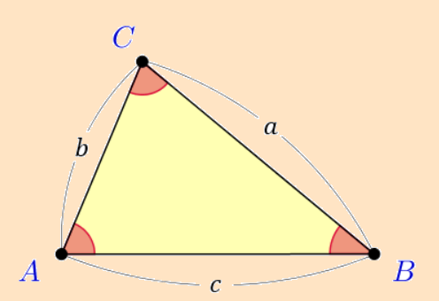

\(円の方程式 \\
円の方程式
(x−p)^2+(y−q)^2=r^2\\
これは 円の中心が点(p,q)、半径が r \)
\(三平方の定理 \\
a^2+b^2(直角を挟む2辺)=c^2(斜辺)\)
\(点と直線の距離 \\
点P(x₁，y₁)と 直線l：ax＋by＋c＝0 の距離をdとしたとき\\
d=\dfrac{|ax₁+by₁+c|}{\sqrt{a^2+b^2}}\)
\(円の方程式 \\
円の方程式
(x−p)^2+(y−q)^2=r^2\\
これは 円の中心が点(p,q)、半径が r \)
\(三平方の定理 \\
a^2+b^2(直角を挟む2辺)=c^2(斜辺)\)
\(点と直線の距離 \\
点P(x₁，y₁)と 直線l：ax＋by＋c＝0 の距離をdとしたとき\\
d=\dfrac{|ax₁+by₁+c|}{\sqrt{a^2+b^2}}\)
\(場合の数と確率 \\[3mm]
和の法則＝同時に起こらない2つの事柄ＡとＢについて、\\
「ＡまたはＢが起こる確率」を求めるときに利用 \\[6mm]
積の法則＝事柄Ａのおこり方がa通りあり、そのおのおのの場合について\\
事柄Ｂのおこり方がb通りあるとき、ＡとＢがともにおこる場合に利用
\)
\(余弦定理\)

\(a^2=b^2+c^2-2bc・\cos A →\cos A=\dfrac{b^2+c^2-a^2}{2bc}\\
b^2=c^2+a^2-2ca・\cos B →\cos B=\dfrac{c^2+a^2-b^2}{2ca}\\
c^2=a^2+b^2-2ab・\cos C →\cos C=\dfrac{a^2+b^2-c^2}{2ab} \)
\(内積の定義 \\
\overrightarrow{0}でない2つのベクトル\overrightarrow{a},\overrightarrow{b}のなす角を\thetaとすると\\
\overrightarrow{a}・\overrightarrow{b}= |\overrightarrow{a}||\overrightarrow{b}|\cos \theta \)
\(垂直条件 \\
\overrightarrow{a} \perp \overrightarrow{b} \Leftrightarrow \overrightarrow{a}・\overrightarrow{b}=0 \)
\(絶対値|x|の定義 \\ \left\{ \begin{matrix}x (x\geqq 0のとき)\\ -x (x<0のとき) \end{matrix} \right. 場合分けが必要\)
\(対数の定義 \\
a>0, a\ne1, M>0のとき a^p=M \Leftrightarrow \log_a M=p\)
\(初項a、公比rの等比数列の総和の公式\)
\begin{eqnarray*}
\sum_{k=1}^{n} ar^{k-1}&=& a + ar + \cdots + ar^{n-1} \\
&=&\dfrac{a(r^n-1)}{r-1}
\end{eqnarray*}
\(接線の方程式 \\
曲線y=f(x)上の点(a,f(a))における接線において \\
傾きは曲線y=f(x)を微分したものでf'(x) \\
よって方程式 y-f(a)=f'(a)(x-a)\)
\(関数においての面積 \\
面積＝積分 \\
f(x)の積分F(x)が分かっているとき、関数f(x)の[a,b]間は \\
\int_{a}^b f(x)dx=F(b)-F(a) \)